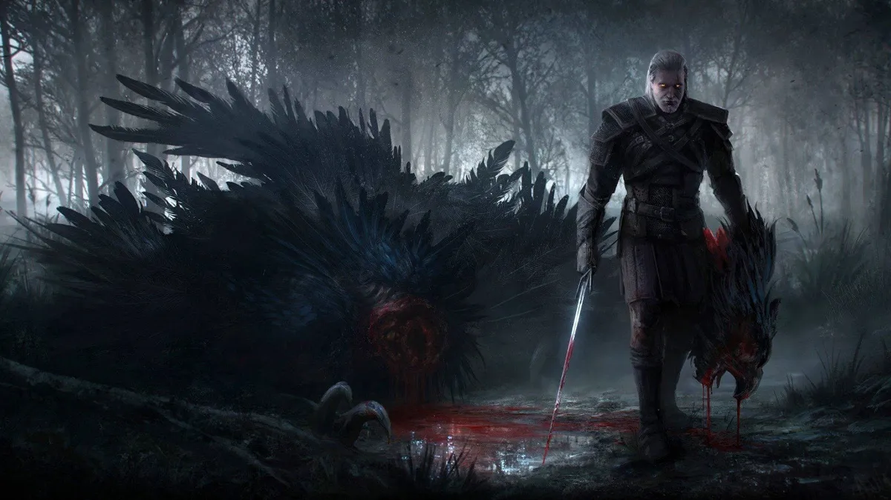
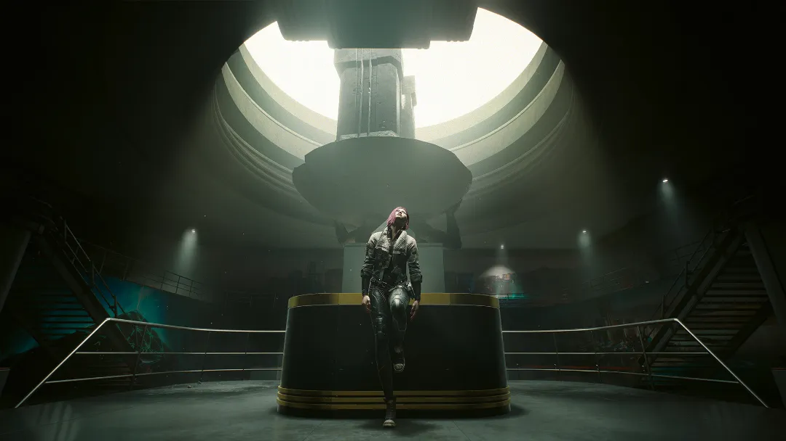
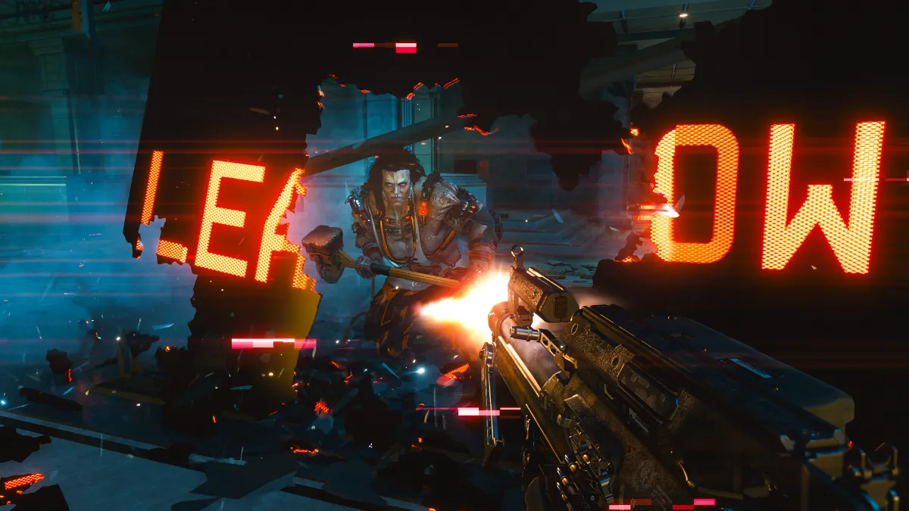

CDPR Rebuilds Trust with The Witcher 4 and Cyberpunk 2077 Sequel
CD Projekt Red, hoping to recover from past setbacks, is working on The Witcher 4 and a sequel to Cyberpunk 2077 to regain the trust of their fans.
The Polish studio, CD Projekt Red, known for its games The Witcher 3 and Cyberpunk 2077, has become one of the biggest names in the gaming industry in recent years. However, the team faced a challenge a few years ago with the problematic launch of Cyberpunk 2077, which slightly damaged its reputation.
That era, however, is now behind them, and the CDPR development team is hopeful that their upcoming releases will restore some of the lost trust. Although the studio acknowledges that they may never fully return to their previous standing.
It’s clear that the team still takes the failure of 2020 seriously, but projects like The Witcher 4 and Project Hadar could, if they perform beyond expectations, help bury those unfortunate events.
Paweł Sasko from CDPR, in a recent interview with Eurogamer, discussed the events leading up to the disastrous launch of Cyberpunk 2077. While the issues of that year were well-documented in the media, this recent interview offers a deeper look into the matter. According to Sasko, the game was in development for around 4.5 years, and the fast-paced development process did the company no favors.
Sasko hopes that fans, despite the events of recent years, will appreciate the efforts of the studio's developers. He also mentioned that several projects are in development, including the sequel to Cyberpunk 2077, which he himself is overseeing.
The director also referred to The Witcher 4, CDPR’s new IP titled Project Hadar, and the Cyberpunk 2077 sequel as the studio's ongoing projects. He described these as ambitious works but believes that The Witcher 4 will raise the bar for RPGs.
While some may believe that CD Projekt Red has revived Cyberpunk 2077 by releasing multiple updates, fixing user experience issues, and launching the major expansion Phantom Liberty, the team itself doesn’t think so. They are still striving to win back their fans' trust.
Currently, the CD Projekt Red development team is focused on The Witcher 4, switching to the Unreal Engine 5. Fans are eagerly awaiting one of the studio’s best outputs to date.